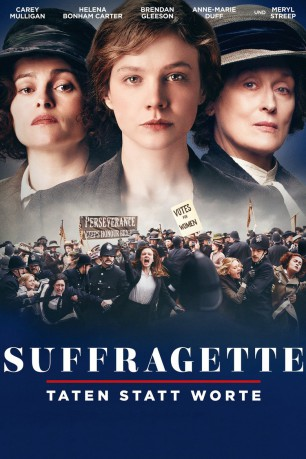

#3795 Suffragette: Taten statt Worte
Alternativ: Suffragette
 
 IMDB-Wertung: 6.9 / 10
IMDB-Wertung: 6.9 / 10  Metascore: 0
Metascore: 0 
1903 gründete Emmeline Pankhurst (Meryl Streep) in Großbritannien die „Women’s Social and Political Union“, eine bürgerliche Frauenbewegung, die in den folgenden Jahren sowohl durch passiven Widerstand, als auch durch öffentliche Proteste bis hin zu Hungerstreiks auf sich aufmerksam machte. Neben dem Wahlrecht kämpften sie für die allgemeine Gleichstellung der Frau und für heute so selbstverständliche Dinge wie das Rauchen in der Öffentlichkeit. Die sogenannten „Suffragetten“ waren teilweise gezwungen in den Untergrund zu gehen und ein gefährliches Katz und Maus-Spiel mit dem immer brutaler zugreifenden Staat zu führen. Es waren größtenteils Arbeiterfrauen, die festgestellt hatten, dass friedliche Proteste keinen Erfolg brachten. In ihrer Radikalisierung riskierten sie alles zu verlieren – ihre Jobs, ihr Heim, ihre Kinder und ihr Leben.
Jahr: 2015
Dauer: 106 Minuten
FSK:
Land: England Studio: Concorde FilmverleihTonspuren: DTS - ,
Untertitel: Deutsch,
Auflösung: 1080p (1920x804) Größe: 8151 MB
Genre: Drama, Geschichte, Biographie
Regisseur: Sarah Gavron
Drehbuch: Malcolm D. Lee
Soundtrack:
Darsteller:
 Anne-Marie Duff als Violet Miller
Anne-Marie Duff als Violet Miller- Grace Stottor als Maggie Miller
 Geoff Bell als Norman Taylor
Geoff Bell als Norman Taylor Carey Mulligan als Maud Watts
Carey Mulligan als Maud Watts- Shelley Longworth als Miss Samson
- Adam Michael Dodd als George Watts
 Ben Whishaw als Sonny Watts
Ben Whishaw als Sonny Watts Sarah Finigan als Mrs Garston
Sarah Finigan als Mrs Garston- Drew Edwards als Male Laundry Worker
 Lorraine Stanley als Mrs Coleman
Lorraine Stanley als Mrs Coleman Romola Garai als Alice Haughton
Romola Garai als Alice Haughton Adam Nagaitis als Mr Cummins
Adam Nagaitis als Mr Cummins Helena Bonham Carter als Edith Ellyn
Helena Bonham Carter als Edith Ellyn Samuel West als Benedict Haughton
Samuel West als Benedict Haughton Nick Hendrix als Government Minister
Nick Hendrix als Government Minister Brendan Gleeson als Inspector Arthur Steed
Brendan Gleeson als Inspector Arthur Steed Morgan Watkins als Detective Malcolm Walsop
Morgan Watkins als Detective Malcolm Walsop- Ross Green als House of Commons Clerk
 Adrian Schiller als David Lloyd George
Adrian Schiller als David Lloyd George- Col Needham als Committee Member
- Natalie Press als Emily Wilding Davison
- Annabelle Dowler als Elegant Suffragette
 Meryl Streep als Emmeline Pankhurst
Meryl Streep als Emmeline Pankhurst- Catherine Tomelty als Elegant Woman
- Lisa Dillon als Mrs Drayton
- Hayley Joanne Bacon als Middle Class Suffragette , uncredited
 Ancuta Breaban als Upper Suffragette , uncredited
Ancuta Breaban als Upper Suffragette , uncredited- Ray Burnet als Churchill, Cabinet Minister , uncredited
 Pamela Betsy Cooper als Laundry Worker , uncredited
Pamela Betsy Cooper als Laundry Worker , uncredited- Amber Dutton als Laundry Worker , uncredited
- Anna Gabell als Mrs. Baxter , uncredited
- Clive Gibson als Plain clothes Police, Steed's men , uncredited
 Lee Nicholas Harris als Police Constable , uncredited
Lee Nicholas Harris als Police Constable , uncredited- Mariola Jaworska als Prison Warden , uncredited
- Judit Novotnik als Prison Warden , uncredited
 Hugh O'Brien als Wealthy Gentleman , uncredited
Hugh O'Brien als Wealthy Gentleman , uncredited Amanda Lawrence als Miss Withers
Amanda Lawrence als Miss Withers Finbar Lynch als Hugh Ellyn
Finbar Lynch als Hugh Ellyn- Clive Wood als Superintendent James Burrill
- Jamie Ballard als Journalist
- Joyce Henderson als Female Prison Guard
- Raewyn Lippert als Mrs Lewis
- Joanna Neary als Woman Prisoner
- Susie Baxter als Landlady
- Matt Blair als Mr. Drayto
- Jacob Krichefski als Prison Officer
- Jonathan Cullen als Prison Doctor
- Daniel Tatarsky als Racecourse Attendant
- James Ward als Racegoer 1
- Adam Harley als Racegoer 2
Datei: X:\2015(N-Z)\Suffragette Taten statt Worte (2015, FSK, 1920x804).mkv seit 14.06.2016
Festplatte: HD 2015(A-Z)
 Es gibt insgesamt 161 Filme in der Gruppe '2015(N-Z)'
Es gibt insgesamt 161 Filme in der Gruppe '2015(N-Z)'